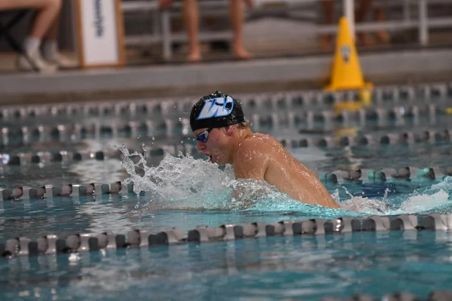
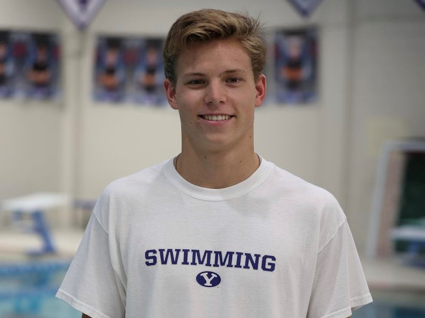

Home |
Resume |
About Me
About Me
My favorite color is blue. I enjoy swimming, waterpolo, spikeball, fishing, and working on cars. A word that best describes me is determined.
My favorite Ice cream flavor is Pope's Post Game Snack.
This paragraph is for demonstration purposes.
This paragraph is for demonstration purposes.
This paragraph is for demonstration purposes.


- Swimming Career
- 7 Time State Chapion
- MSHSAA Class 1 Record Holder in the 100 Yard Breaststroke
- 3 Time Waterpolo State Champion
- Second Fastest Time in the 200 Breastroke in BYU school history
- Academic Career
- Graduated Summa Cum Laude at Parkway West High School
- Scored in the 97th percentile on the ACT
- Member of NHS, Beta Chi Pi, and Mu Alpha Theta
Back to the top